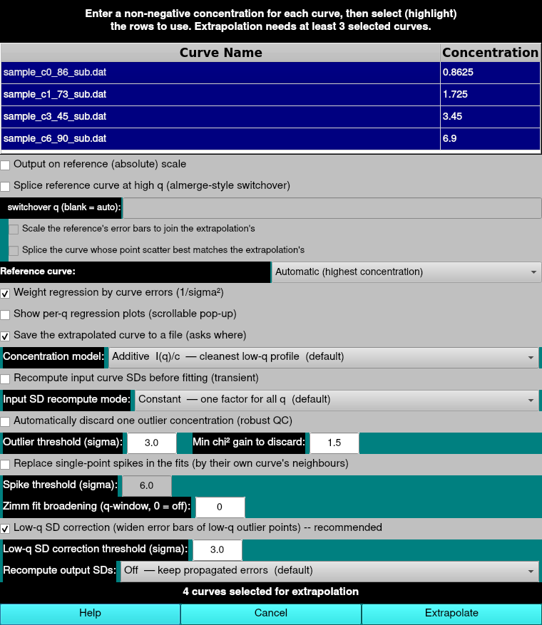
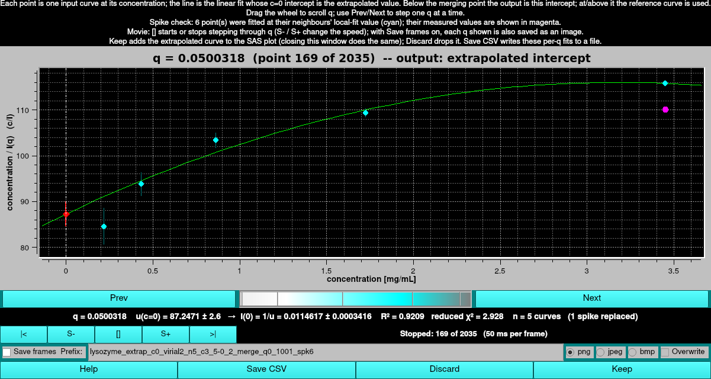

Manual |
Small-angle scattering intensities measured at finite concentration contain a concentration-dependent contribution from interparticle interactions (the structure factor). The Extrapolate to zero concentration function removes this contribution by combining a set of I(q) curves measured at different concentrations and extrapolating, at each q, to the ideal dilute limit c = 0.
The function is reached from the SOMO SAXS/SANS Load, manage, and process SAS data module: load or plot the curves of interest, press Load Plotted, select at least three curves, and choose Extrap. to zero conc → Extrapolate. A dialog then opens in which concentrations are assigned and the extrapolation is performed.
The dialog lists each selected curve with its concentration. Concentrations
are pre-filled from the curve headers (the Conc: tag) or from any
value already known to SOMO, and may be edited; each must be a non-negative
number. A concentration shown on a red
background is not yet a valid number.
Partial specific volume and standard I(0). Alongside the concentration, each
curve can carry two molecular properties read from its header — the partial specific volume
(the PSV: tag) and the standard experimental forward scatter I(0) (the
I0se: tag) — which the downstream Guinier / molecular-weight analysis relies on.
Because these are properties of the molecule, they must be the same for every curve in a
concentration series. If two selected curves carry different explicit values the
extrapolation is aborted with a message naming the disagreeing curve, so the headers can be
corrected; a curve that has no such header simply uses the program default and is treated as
compatible.

Selecting the curves. The rows highlighted (selected) in the table are the curves that will be used. All rows are selected by default. Use the mouse (click, Shift-click for a range, Ctrl-click to toggle individual rows) to change the selection. The Extrapolate button becomes active only when at least three rows are selected and every selected row has a valid concentration; the status line below the table reports the current state.
The option rows below the table sit in a scrolling area: the window opens no taller than the screen and can be resized to any height, the options scrolling when it is shorter than they are, while the table, the status line and the buttons stay in view.
Note: because the concentration cells remain editable, double-clicking a cell to edit it may collapse the selection to that single row. Set the concentrations first, then choose the selection.
An extrapolation is described by two independent choices: how the intensity is
fitted against concentration (the concentration model, below) and what convention
the resulting curve is expressed in (two checkboxes, described here). The fit itself always
produces the same thing — the c = 0 dilute-limit curve, normalized per
unit concentration (the small-angle-scattering analogue of a Zimm plot). With both output
checkboxes unchecked (the default), that normalized curve is the output: it is tagged
Conc:1 (SOMO's convention for an already-normalized curve) and carries the standard
error of the fitted intercept as its uncertainty. Each q is fitted on its own; nothing is
smoothed across q (apart from the optional manual fit broadening described below).
Weight regression by curve errors (1/σ²) (checkbox, on by default). With
this on, every concentration regression is fitted with inverse-variance weights — each
point weighted by 1/σ², with the curve's error propagated onto the fit axis
(σ/c for the additive I/c axis, σ·c/I² for the
reciprocal c/I axis) — and that error is propagated into the extrapolated
intercept's reported error bar. This is the statistically optimal choice when the error bars are
reliable, and for the reciprocal axis it automatically de-emphasizes the noisy high-q.
Unchecked, an ordinary (unweighted) least-squares fit is used: the curve errors are still drawn in
the regression plots but are not used in the fit, and the intercept error bar is the fit's residual
scatter. Unweighted is more robust when the error bars are missing or mis-scaled (common in SAXS);
a large difference between the weighted and unweighted results is itself a sign that the error bars
are driving the extrapolation. The switch affects only the concentration regression (including the
outlier check, which then standardizes residuals by their per-q scatter instead of by
σ) — not the high-q reference merge test or the post-fit SD reassessment, which
are inherently error-based. If weighting is on but some points carry no usable error, those q
are fitted unweighted and the count is reported. An unweighted run adds _uw to the
output curve name.
Concentration model (drop-down). This selects how the intensity is fitted against concentration at each q, and chiefly affects the accuracy of the molecular weight read from the extrapolated forward scatter I(0):
All three were validated against a physical Percus–Yevick hard-sphere ground truth:
the additive fit is biased low, the first-order reciprocal is accurate at realistic
interaction but over-corrects when very strong, and the second-order virial is within a few
percent across the whole range. The additive model is the default: it gives a clean low-q
profile on every dataset tested. Choose reciprocal (or the second-order
virial) when an unbiased molecular weight is the priority; the model applies regardless of the
output convention, so the reference-scale and spliced outputs use the selected model too. A preferred
default may be preselected via the gparam
saxs_extrap_c0_model (0 additive, 1 reciprocal, 2 virial).
Fit broadening (manual; additive model only). Used only with the additive model and with both output-convention boxes off; the field is disabled otherwise. Setting Zimm fit broadening (q-window) to a value N > 1 averages the concentration slope over an N-point window and then recomputes each intercept (a = ⟨I/c⟩ − bsmoothed⟨c⟩). 0 (the default of this field) leaves the per-q fits independent. This smooths the concentration dependence, not the output curve itself (smoothing the output directly would smear real features and is not done). Because it couples neighbouring q, it can also spread a single bad low-q point over its neighbours; leave it at 0 unless the extrapolation is dominated by concentration-slope noise.
Output conventions (two independent checkboxes). The normalized c = 0 fit above can be re-expressed in either or both of the following ways. They are output conventions layered on top of the fit — they do not change the fit, so they combine freely with any concentration model.
saxs_extrap_c0_merge_chi2); CORMAP (saxs_extrap_c0_pvalue_alpha, default
0.01) is used instead when the reference has no error column. If no such point exists, nothing is
spliced: a message says so, the whole curve is extrapolated, and the output name carries
_merge without a _q value. On many real dilution series the automatic test
finds no agreement, because the extrapolation to c = 0 magnifies small scale or
background (buffer-subtraction) differences between the input curves, so the two curves differ
systematically even at high q. The switchover q field (blank = automatic) then lets you
pin the merge to a chosen q. Below the merge the error bars are the propagated intercept
standard error; at and above it they are the reference's own, scaled by the continuity factor.
Because the extrapolation is usually much less certain than a single measured curve, the error bars
step down at the merge; that step reflects a real difference in information.
Scale the reference's error bars to join the extrapolation's (off by default). That
step also hands the spliced high-q part most of the 1/σ2 weight in any
later fit (Guinier, GNOM, NNLS), so the high-q data can dominate a fit whose information is
mostly at low q. With this box checked, the spliced reference's error bars are multiplied by
one factor: the median ratio of the extrapolation's error bars to the reference's (after the
continuity factor) over the same 25 points just below the merge. The error bars then join at the
merge with no step, while the high-q part keeps the reference's own q-dependence and
needs no extrapolated error bars above the merge (where the fit may have skipped points). The
factor is applied only when it is above 1, so the spliced part is never given smaller error bars than
the measured reference curve has; it is reported in the log, and the output name gains
_sdj. On a five-curve lysozyme series spliced at q = 0.1 the factor was
about 6 (nearly the same whether 25, 50 or 100 points were used), lowering the share of the total fit
weight above the merge from 99.6% to 89%.
Splice the curve whose point scatter best matches the extrapolation's (off by default;
only with the splice, and not together with an explicitly chosen reference curve). The extrapolation
always scatters more than any single measured curve, so a spliced high-concentration reference looks
much cleaner above the merge than the extrapolation does below it. With this box checked, the spliced
curve is chosen after the extrapolation: each curve is scaled onto the extrapolation (the
median ratio over the 25 points below the merge, as for the continuity factor), its point-to-point
scatter about a local quadratic is measured over the 50 points below the merge, and the curve whose
scatter is closest to the extrapolation's own is spliced. The merge point is located first (or pinned
by the switchover field), so the choice cannot move it, and the absolute scale stays on the reference
curve. The log lists, for every curve, its scatter relative to the extrapolation's and how far its
high-q I/c departs from the most concentrated curve's (relative to just below the
merge), and warns when the chosen curve departs by more than 5%. That check matters: the curve whose
scatter matches is usually one of the most dilute, and on real series those often carry their own
background at high q (buffer subtraction), which the splice then copies into the output. When
the chosen curve is not the reference, the output name gains _refscc (its
concentration, decimal written as an underscore).
Whenever a splice is made, the log reports the splice check: the inverse-variance mean ratio of extrapolation to reference, with its standard error, over the points just below the merge. If the two differ by more than 5% and more than three standard errors, a warning says so, because the continuity factor then rescales the whole high-q tail by that amount. A difference that large means either the switchover q is still inside the concentration-dependent region, or the input curves differ in scale or background; check them before relying on the high-q part.
The two combine to give four behaviors: neither box = the classic normalized Conc:1
curve; scale only = the same curve on the absolute reference scale; splice only = a normalized
curve with the clean reference tail; both = the former "absolute-scale mode" (reference scale
with the high-q splice). Unlike before, all four now honor the chosen concentration model,
so the reciprocal/virial models' unbiased molecular weight is available on the absolute scale too.
Which curve is the reference. Both of the above use a reference curve, and by default that is the one at the highest concentration. That is the right default rather than an arbitrary one: scattered intensity scales with concentration, so the most concentrated curve normally has the best high-q signal-to-noise — precisely what the splice needs, since above the merge point the output is that curve. It is the wrong choice only when that particular curve is itself unsound (aggregation, a mis-set concentration, radiation damage, poor buffer subtraction).
The program cannot detect that for itself. The highest-concentration curve sits at the extreme of
the concentration axis, so it carries almost all the leverage in the per-q fit: the fitted line
passes essentially through it and its residual is near zero however it is scaled. Judging it needs
information from outside the concentration regression — for instance comparing the molecular
weight implied by each curve's I(0) against the known value. Where you have such knowledge you
can say so: the concentration dialog offers a Reference curve selector (default
Automatic (highest concentration), and enabled only when one of the two options above is
ticked, since nothing else uses a reference), and the scripted interface has the equivalent
reference directive.
Per-curve forward scatter (a diagnostic, not a decision). Every run reports a short table: for each curve, its Guinier Rg and I(0), the ratio I(0)/c, and how far that ratio sits from (i) the median of the series and (ii) the trend predicted by the other curves. I(0)/c is constant in the dilute limit and falls smoothly as the interparticle term grows, so a curve well off the others points to a mis-set concentration or to aggregation. The trend column is computed leaving that curve out of the fit, so it cannot pull the line onto itself — which matters for the highest concentration, where an ordinary residual is structurally uninformative. Deviations beyond 15 % are highlighted.
This table is reported only: nothing is discarded or re-selected on the strength of it. That is deliberate. Testing showed that the statistics available inside a concentration series do not reliably identify a defective highest-concentration curve — they track signal-to-noise, which rises with concentration, so the curve most in need of scrutiny tends to look the best of the set. The table is here to put the evidence in front of the person who has the outside knowledge (a known molecular weight, say); the Reference curve selector above is how you act on it.
Caveat when overriding with the splice enabled: the merge point is found as the q from which the extrapolation stops differing from the reference, i.e. where the interparticle contribution has died away. A lower-concentration reference is both nearer the dilute limit already and noisier, so that test passes almost at once: the merge point moves down towards qmin and the output becomes that one raw curve rather than the de-noised extrapolation. Both situations are reported in the log — a merge point close to the start of the grid is flagged explicitly. If you need a different reference for the absolute scale, consider turning the splice off.
Recompute input curve SDs before fitting (checkbox, off by default, with a mode
sub-option). When checked, each selected input curve's error bars are first reassessed from the
curve's own point-to-point scatter — the same BayesApp engine (Larsen & Pedersen, 2021)
used by “Recompute output SDs” below and the s.d.util “SD rescale” button
— and the reassessed errors are used for this extrapolation only. The reassessment
runs before everything else, so the improved errors feed the outlier check, the 1/σ²
weights, and the high-q reference merge test. This is transient: the loaded curves
are not modified — to change a curve's errors permanently, use the s.d.util
“SD rescale” button instead. The mode sub-option (Constant default,
Non-constant, Intensity-dependent) is the same set of rescaling modes as the output
reassessment; Constant (one factor per curve) is the safest default. It pairs naturally with error
weighting on (fix the errors, then weight by them); with weighting off it affects only the plotted
error bars and the merge test. Each curve's verdict and factor are reported in the log, and the
output name gains _riC / _riN / _riI.
Recompute output SDs (drop-down). By default the extrapolated curve carries its
propagated error bars (the per-q intercept standard error, and the reference's
own errors in any spliced high-q region). This optional selection instead reassesses
the output curve's error bars from the curve's own point-to-point scatter, using the same
BayesApp-style engine as the HPLC/KIN s.d.util “SD rescale” button (Larsen
& Pedersen, 2021): a local inverse-variance quadratic smoother gives the residuals and an
effective number of degrees of freedom, hence a reduced χ2 and a
two-sided p-value, and σ is rescaled only when the fit is poor and the
implied factor is more than 10 % from unity. The modes are Constant (a single
factor for all q), Non-constant (a per-q-bin factor, for a
q-dependent misestimate), and Intensity-dependent
(σ → σ + a·|I|); Off
keeps the propagated errors. When a reference tail is spliced in, the reassessment spans the
whole spliced curve. The verdict, reduced χ2, and p-value are
reported in the log, and the chosen mode is encoded in the curve name
(_sdC / _sdN / _sdI).
Automatically discard one outlier concentration (checkbox, off by default; with two
threshold fields). A single curve with a mis-entered concentration, a scaling error, or
aggregation sits off the concentration trend at essentially every q, and because
it is on the wrong concentration axis rather than merely noisy, the inverse-variance weighting
does not suppress it — it biases every per-q fit and can even be picked as the
high-q reference. When this box is checked, such a curve is detected and removed from the
whole fit (before the reference is chosen), so the extrapolation is computed on the remaining
curves. At most one curve is discarded from the interactive dialog, and only when enough
remain (≥ 3, or ≥ 4 for the 2nd-order virial); the scripted interface can raise that
limit (see outlier_max below), in which case detection is simply repeated on the
cleaned set until no curve qualifies. Raising it matters when more than one curve is contaminated,
because a single pass judges every curve against a trend that still contains the other offender, so
the nominee itself can be the wrong curve. Detection is at the curve level, never per-q:
per-q outlier trimming across the concentrations would overfit at these small point counts and
stitch discontinuities into the output, whereas a bad concentration is a whole-curve property (single
bad points are the job of the spike check below, which looks along each curve and replaces rather than
removes). The two fields tune it:
Outlier threshold (sigma) (default 3.0) is the mean studentized residual across q
above which a curve is flagged, and Min χ² gain to discard (default 1.5) is the
factor by which removing the curve must improve the pooled reduced χ2 before
it is actually dropped; the curve must also be consistently one-signed (a systematic offset, not
noise). Because a concentration error bites hardest at low q, mild outliers often sit near
a mean residual of 1–2 rather than 3, so lowering the sigma field (e.g. to 1.5) with the
χ² gain near 1.2 is the way to act on a borderline curve; the default is deliberately
conservative. Every run reports the most-outlying curve and all of these numbers in the log (so
the thresholds can be tuned), whether or not anything is discarded. A discarded curve is drawn as
a red x in the per-q regression plots and noted in the log, and the output name gains
_qcN for N discarded curves (_qc1 in the usual single-discard
case; _qc0 when the QC was on and discarded none, also when there were too few curves
to evaluate). When more than one curve is discarded the red x marks the first (strongest) one, while
the log records every discard.
This targets concentration/scale outliers; curve-shape problems such as aggregation are the job of
the Guinier quality check below.
Why the residual is leverage-corrected. The residual used to rank the curves is studentized: divided by √(1−h), where h is the curve's leverage in the per-q fit of intensity against concentration. This matters because the highest- concentration curve sits at the extreme of the concentration axis and therefore carries the most leverage: it pulls the fitted line towards itself and so shrinks its own residual. Without the correction a genuinely bad highest-concentration curve is masked — on a seven-curve test series the top curve carried a leverage of 0.80 against an average of 0.29, which placed it fifth of seven on the raw statistic and second once corrected. Since the residual variance is σ2(1−h), this is the standard studentized residual rather than a heuristic adjustment.
A limitation worth knowing: when one concentration sits far above all the others, its leverage can approach 1, meaning the fitted line passes almost exactly through it and the regression has essentially no information with which to judge it — its residual is near zero however it is scaled. No residual-based test, corrected or not, can assess such a curve. Judging it requires information from outside the concentration regression, for example comparing the molecular weight deduced from each curve's I(0) against the known value.
Replace single-point spikes in the fits (checkbox, off by default, with a Spike
threshold (sigma) field, default 6.0). This guards against clear spikes — a single bad
point on one curve. Each point is compared with a local quadratic fitted through its own curve's
neighbours in q (±10 points, the point itself left out), in units of its own error bar
(the error of the local fit included); a curve without usable error bars is judged against a robust
local spread of its residuals instead. A point beyond the threshold is replaced, for the
concentration fit only, by that local-fit value, keeping its own error bar. The check runs after
the outlier-concentration QC, on the curves being fitted; the input curves themselves are not
changed. The measured values of replaced points are drawn in magenta
in the per-q regression plots (the fit uses the ordinary point at the same concentration), the
log reports how many were replaced (per curve, with the first few listed, and how many q had
more than one curve flagged — a spike shared by several curves, e.g. in a common buffer, or a
sharp feature), and the output name gains _spkN for N points
(_spk0 when the check was on and replaced none; plus sx for a
non-default threshold, e.g. _spk2s5_0). With the splice on, a
spike on the spliced curve above the merge would be copied straight into the output, so that
q is left out of the output instead (and counted in N).
Why replace rather than leave the point out: leaving it out changes the set of curves fitted at that one q. Where the concentration model does not follow the series exactly (for example with compounded dilution errors), a fit without one of the curves, especially the most concentrated one, differs from its neighbours by that misfit: on a five-curve lysozyme series a +10 SD spike on the most concentrated curve moved the additive result at its q by −0.9 SD, but leaving the point out moved it by +2.3 SD. Replacing it keeps every q on the same curves. Why along each curve rather than across the concentrations: in the concentration fit the most concentrated curve pulls the line onto itself, so a spike on it shows up only once it is many times its own error bar (on the same series, about 30–50 SD for the straight-line fits at a 6-SD threshold and well over 100 for the 2nd-order virial), and points on the end curves are flagged where the line simply misfits the concentration trend. Along the curve, at the default threshold a spike of about 6.4 of its own SDs is caught half the time and one of 8 SDs about 95% of the time, on any curve; on that lysozyme series no point of any curve was more than 4.2 SD off its neighbours, so nothing was replaced.
Low-q SD correction (checkbox, on by default, with a threshold (sigma) field,
default 3.0; applies to any model). This acts on the extrapolated curve's error bars only,
after the fit — so after the outlier-concentration check above has already made its decision
on the input curves, which it cannot influence. A very-low-q point that the extrapolation
places far off the smooth low-q trend is almost always a correlated buffer-subtraction /
detector artifact rather than signal: because the input curves tend to agree on such an
artifact, its extrapolated error comes out falsely small, giving it large — and wrong —
weight in any downstream 1/σ² fit (Guinier, GNOM, an NNLS reconstruction). With this on,
a robust (outlier-resistant) trend is fitted to ln I versus q2 over
q ≤ 2/Rg, and each point lying more than the threshold number of
standard deviations off that trend has its error bar widened to how far it sits off the trend, so its
weight drops to what it should be. Points within the threshold are left exactly as they were.
No intensity is changed — only error bars, and only upward. The log reports how many
points were widened and the largest correction, or that none needed it. The threshold matters: a
widened point ends up exactly one standard deviation off the trend, so with a threshold near 1
ordinary noise would be widened too (about a third of honest points scatter by more than 1 sd),
and a Guinier residual plot of the result would show a flat band at ±1 rather than the true
scatter. At the default of 3, honest noise is essentially never touched. If Recompute output
SDs is also selected, it runs after this correction. A non-default threshold adds
_lqsdx to the output name, and switching the correction off adds
_nolqsd.

Checking Show per-q regression plots in the concentration dialog opens a pop-up window after the extrapolation. It shows, one q value at a time, each input curve as a point at its concentration (with its error bar) together with the per-q result: the fitted line and its extrapolated c = 0 intercept (highlighted, with its own error bar) at the dashed vertical axis. When the reference curve is spliced (the merge checkbox), the title also notes, for the current q, whether the output there is the extrapolated intercept (below the merging point) or taken from the reference curve (at/above it). Drag the wheel to scroll smoothly through the q grid (it has inertia, so a flick keeps scrolling); the Prev and Next buttons step one q at a time. The line below the plot reports, for the current q, the extrapolated c = 0 result ± its error, the number of curves used, and a goodness-of-fit summary — the coefficient of determination R², and (when the data carry error bars) the reduced χ² of the points about the fit — so the quality of each per-q extrapolation can be judged at a glance.
The y axis and the fitted curve follow the selected concentration model; the plot always shows the normalized fit (the reference scale and splice are output conventions applied afterwards, not part of the fit). For the additive model the axis is I(q)/c (or I*(q) for already-normalized inputs) and the intercept is the dilute I(0) directly. For the reciprocal and 2nd-order virial models the axis is c/I(q): the plotted intercept is u and the readout also gives the recovered forward scatter I(0) = 1/u with its propagated error; the 2nd-order virial draws its fitted parabola rather than a straight line. When the manual fit-broadening window is active, the fit line uses the smoothed slope — a note above the plot says so — so it may not pass exactly through the raw per-q intercept. The measured value of a point replaced as a single-point spike (see the spike check) is drawn in magenta with its error bar, so it is visible why it was replaced; the fit uses the ordinary point at the same concentration, and the readout notes it. An outlier-QC discarded curve is drawn as a red x.
Keep, Discard and Save CSV. While the regression plots are open, the extrapolated curve is
not yet added to the plot, so the fits can be inspected first. Keep closes the window and
adds the curve (closing the window any other way does the same); Discard closes it without adding
anything. Save CSV writes the per-q fits to a file (default name: the curve name plus
_fits.csv, in the folder the curves were last loaded from). Its comment lines (starting
with #) give the curve name, model, fit axis, switchover q and each input curve with
its concentration; then one row per q holds the fit intercept with its error, the slope (and
quadratic coefficient for the 2nd-order virial), the number of curves fitted, the fit's goodness of
fit (fit_r2, fit_chi2 and fit_reduced_chi2: the R²,
the χ² of the fitted points with their own errors, and that χ² divided by the number
of points with an error minus the number of fitted parameters, 2 or 3 for the 2nd-order virial
— the values shown below the plot; blank where not defined), the extrapolated value
and error as added (after any splice and scale), and for every curve its value on the fit axis, its
error and its status (fit; replaced for a spike fitted at its neighbours'
value, with the measured value in an extra column; blank where it has no value at that q), plus
a column for an outlier-QC discarded curve.
Movie. The row of buttons below the results line steps through the q grid on a timer,
as the HPLC/KIN movie does: [] starts the movie from the current q (from the first if at
the last) and || stops it, S- and S+ halve or double the speed (50 ms to
5 s per frame; the label shows it), and |< and >| go to the first and last
q. With Save frames checked, every q shown — by the movie, Prev/Next or the
wheel — is also saved as an image of the plot with its results line, as png (default), jpeg or bmp,
named prefix_NNNNN by the q point number (e.g.
..._00042.png) in a folder prefix_frames next to the input curves
(the folder they were last loaded from). The prefix defaults to the extrapolated curve's name. A
frame file already there is kept unless Overwrite is checked. When the movie reaches the last
q it stops and turns frame saving (and Overwrite) off, so later stepping does not add frames;
the log reports how many frames were saved and where. SOMO saves only the frames: a movie is made from
them with an external tool, for example
ffmpeg -framerate 10 -start_number 1 -i prefix_%05d.png -pix_fmt yuv420p movie.mp4
(with -start_number set to the first frame's number). The speed and the image format
are remembered for the session.
A negative R² is expected at some q and is not an error. R² here is the fraction of the points' variance explained by the plotted line (1 − SSresidual/SStotal), so it goes negative whenever the plotted line fits the points more poorly than a flat line through their mean. That happens legitimately in two situations. First, with fit broadening the slope at each q is deliberately borrowed from neighbouring q rather than fitted locally; at the noise-dominated low-q points — where the individual curves show no real concentration trend — that shared slope can fit worse than a flat mean, giving R² < 0. This is the smoothing working as intended: it stabilizes the c = 0 intercept by not chasing local noise, and a negative R² there is a useful signal that the per-q trend is noise rather than a defect. Second, the fit is inverse-variance weighted while R² is computed unweighted, so a single high-error point can also push it slightly below zero. With only a few concentrations the statistic is noisy in any case; judge the extrapolation on the reduced χ² and the overall Guinier quality check as well, not on a single q's R².

A new curve is added to the plot (with the per-q regression plots open, when you press
Keep there). Its name is the longest common prefix of the
selected curve names followed by _extrap_c0 and tokens encoding the choices
that produced it — the concentration model
(_add / _recip / _virial2), then the
curves used: _nk_cmax-min for k
curves with concentrations from max down to min, after any outlier-QC discard, written
with one decimal, the decimal point written as an underscore like the other tokens (e.g.
_n5_c3_5-0_2 for 3.45 to 0.216 mg/mL; a value that would read 0_0 keeps
enough decimals to show its first digit, e.g. 0_04), then
_abs if on the reference scale and _merge if the reference was
spliced — and, when spliced, the merge point q (with the decimal written as an
underscore, e.g. _merge_q0_0898 for a cutover at q = 0.0898)
followed by _sdj if the reference's error bars were scaled to join the extrapolation's,
_fbN for a manual fit-broadening window, _nolqsd if the low-q
SD correction was off or _lqsdx for a non-default threshold, _refcc if a
reference curve was chosen explicitly (with its concentration, decimal written as an underscore),
_refscc if another curve was spliced because its point scatter matched best,
an input-SD recompute if one was applied
(_riC / _riN / _riI), the
output SD-reassessment mode if one was applied
(_sdC / _sdN / _sdI), and
_qcN with the outlier QC on, for N discarded curves (_qc0
if it discarded none; with _rawres appended after a discard when the leverage correction
was disabled, since that can change which curve was dropped),
_spkN with the spike check on, for N replaced points (_spk0
if none),
and _uw if the
regression was unweighted (curve errors not used), so a
run's cutover is visible in its name (for example
Sub_..._extrap_c0_recip_n4_c6_8-0_9_abs_merge_q0_0898). Distinct selections
therefore produce distinct, self-describing names; a genuine repeat of the same configuration
gets a numeric suffix. Curves with a concentration of zero are excluded from the fit, and any
q point with fewer than two usable values is skipped; the editor window reports how many
curves and points were used, the fit model and output conventions, and, when a reference is
used, its identity and the merge point.
The extrapolated curve inherits the series' partial specific volume and standard I(0)
(the agreed PSV: / I0se: values described above) — both in
the plot, so that a subsequent Guinier / molecular-weight analysis of it uses the correct values
rather than the program defaults, and in the saved file's header, so they round-trip. These
values are also preserved on the input curves themselves (re-plotting no longer resets them to the
defaults). Sending curves from this window to HPLC/KIN carries each curve's explicit
PSV: and I0se: values along with its concentration, so a curve saved from
there keeps them too (values that are only the program defaults are not passed on).
Save the extrapolated curve to a file (checkbox, on by default). Once the curve is added
(after Keep when the regression plots are open), a file dialog asks where to save it, starting
in the folder the curves were last loaded from, with the curve name as the file name; cancel it to
skip saving. The file has the same three-column q / I(q) / sd
format as the inputs, and its header line carries the curve name, Conc:, the series'
PSV: / I0se: when present, and the curves used with their
concentrations (Inputs (k): name c mg/mL, ...),
plus any curve the outlier QC discarded. The scripted interface writes the same file for its
output directive.
Guinier quality check. After the curve is produced, the editor window reports a Guinier fit of it (a straight-line fit of ln I versus q2 over the low-q region, the window chosen so qmax·Rg ≤ 1.3): the radius of gyration Rg, I(0), and the fit's R2. This is a ground-truth-free quality signal — a high R2 with a physically sensible Rg indicates a clean low-q extrapolation; a low R2 is flagged and suggests checking the low-q data or the assigned concentrations.
Curves whose name contains _Istarq_ are treated as already being in
I*(q) form (header units g/mol, I(0) = MW), i.e. their
intensity has already been normalized by concentration — even though their
Conc: header carries the real, non-unity measurement concentration. For
these curves the intensity is used as is (it is not
divided by concentration again), while the real concentration is still used as the
extrapolation variable. A selection made entirely of I*(q) curves therefore
produces an already-normalized result (tagged Conc:1 in both modes). Mixing
I*(q) curves with raw-intensity curves in one extrapolation is flagged with a
warning, as the two are on different scales.
The same extrapolation can be run without the interactive dialogs, driven from a
gui_script so that a run is reproducible and its result can be saved for
regression testing or batch validation. The computation is identical to the interactive
one — the same fit, the same options, the same output curve — only the two
dialogs are replaced by a control file. Invoke it as:
us3_somo -I -g scriptwhere script contains one or more lines of the form
saxs_extrap_c0 controlfile (followed by exit). The
-I flag runs with the stored configuration and no start-up prompts. Each control
file is a small key/value text file (one directive per line; lines beginning with #
are comments). The input and output values may contain spaces:
input path — an input curve (a three-column
q / I(q) / sd .dat file with a
Conc: header); repeat for each curve (at least three). The concentration is read
from each file's header, as are the optional PSV: and I0se: tags.
output path — where the extrapolated curve is written
(same three-column format; the header carries Conc:, the series'
PSV: / I0se: when present, so it round-trips, and the curves
used with their concentrations).
common_crop 0|1 — crop the inputs to their shared q-overlap before
loading (default 1). Curves that sit on one detector grid but were cut at different low q
then load as identical grids with no interpolation; without it the loader resamples the mismatched
grids and spline-extrapolates the higher-starting curves below their own data.
fill_sd 0|1 — repair non-positive input standard deviations before loading
(default 1). This matters more than it sounds: SOMO's error handling is all-or-nothing, so a
single non-positive SD — commonly one zero at a grid edge in deposited data —
disables that whole curve's errors and silently forces an unweighted fit. With this on, each
non-positive SD is replaced by its nearest positive neighbour, but only when the positive SDs are in
the majority (a mostly-zero curve carries no error information to borrow from). Either way the
affected curves are named in the log. Set 0 to reproduce the raw, unrepaired behaviour.
model additive | reciprocal | virial2
(default additive).
merge_q q — pin the splice switchover to this q instead of
locating it automatically (requires merge_ref 1; blank or 0 = automatic).
merge_sd_join 0|1 (default 0) — scale the spliced reference's error bars
to join the extrapolation's at the merge (requires merge_ref 1).
reference_by_scatter 0|1 (default 0) — splice the curve whose point
scatter best matches the extrapolation's (requires merge_ref 1; ignored with an
explicit reference).
spike_reject 0|1 (default 0), spike_sigma x
(default 6.0) — replace single-point spikes in the per-q fits, and the
threshold.
ref_scale 0|1, merge_ref 0|1 — output on the reference
absolute scale, and splice the reference above the merge point.
sd_weights 0|1 (default 1), fit_broaden N
(default 0) — inverse-variance weighting, and the manual fit-broadening window (additive
model only).
se_repair 0|1 (default 1), se_repair_sigma x
(default 3.0) — the low-q SD correction and its threshold.
recompute_inputs off|constant|nonconstant|intensity — transiently
reassess the input SDs before fitting.
sd_reassess off|constant|nonconstant|intensity — reassess the output
SDs after fitting.
discard_outlier 0|1, outlier_sigma x,
outlier_chi2 x — the automatic outlier-concentration QC and
its thresholds.
outlier_max N — maximum number of curves the QC may discard
(default 1, which reproduces the interactive behaviour). With N > 1 the
detection is repeated on the cleaned set until no curve qualifies; hitting the limit while another
curve still qualifies is reported rather than passed over silently.
outlier_leverage 0|1 — studentize the ranking residual by
√(1−h) (default 1). Set 0 to rank on the raw standardized residual, which
masks the highest-concentration curve as described above.
reference curve-name | conc — choose the reference
curve explicitly instead of the default highest-concentration pick; accepts a curve name (or a
distinctive part of one) or a concentration value. Intended for the case where the
highest-concentration curve is known to be unsound — a judgement the program cannot make for
itself (see the caveat under the reference splice). A value matching no selected curve is reported
and the default is used; it is never silently ignored.
conc "name" value — optional; override a
curve's concentration instead of using its header.
dump_conc_csv path — optional; after the run, write the per-curve
table (name, concentration, PSV, I0se) for every plotted curve, e.g. to confirm that the
extrapolated curve carries the inputs' values.
Automatic slope regularization (GCV) was removed in November 2026; every fit is now the
unsmoothed per-q fit. Control files written for earlier versions may still contain a
gcv line: gcv 0 is accepted silently, and gcv 1 (or
gcv_lambda) is ignored with a note in the log.
For example, a control file selecting the reciprocal model on the reference absolute scale with the reference spliced in above the merge point:
# reciprocal, absolute scale, reference splice
input curve_c1.dat
input curve_c2.dat
input curve_c3.dat
output extrap_c0.dat
model reciprocal
ref_scale 1
merge_ref 1
The diagnostics that would appear in the editor window (curves and points used, fit model and conventions, merge point, Guinier quality check, outlier-QC verdict, SD-reassessment verdict) are written to standard output, and the produced curve carries the same self-describing name as in the interactive run.
The linear extrapolation of concentration-normalized intensity to infinite dilution (Zimm mode) follows the approach introduced in: Zimm, B. H. (1948) The scattering of light and the radial distribution function of high polymer solutions. J. Chem. Phys. 16, 1093-1099.
The concentration extrapolation and the almerge algorithm reproduced by Absolute-scale mode are described in: Petoukhov, M. V., Franke, D., Shkumatov, A. V., Tria, G., Kikhney, A. G., Gajda, M., Gorba, C., Mertens, H. D. T., Konarev, P. V. & Svergun, D. I. (2012) New developments in the ATSAS program package for small-angle scattering data analysis. J. Appl. Cryst. 45, 342-350; and Franke, D., Petoukhov, M. V., Konarev, P. V., Panjkovich, A., Tuukkanen, A., Mertens, H. D. T., Kikhney, A. G., Hajizadeh, N. R., Franklin, J. M., Jeffries, C. M. & Svergun, D. I. (2017) ATSAS 2.8: a comprehensive data analysis suite for small-angle scattering from macromolecular solutions. J. Appl. Cryst. 50, 1212-1225.
www contact: Emre Brookes
This document is part of the UltraScan Software Documentation
distribution.
Copyright © notice.
The latest version of this document can always be found at:
Last modified on November 17, 2026.